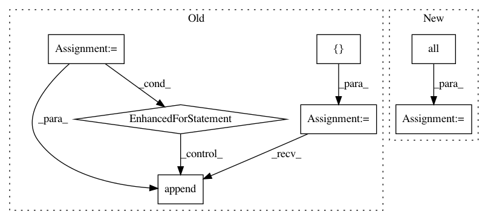

99d2d1aced54a9673b9e25b6c1f992acd20535e1,common/data_refinery_common/rna_seq.py,,get_quant_results_for_experiment,#Any#,74
Before Change
def get_quant_results_for_experiment(experiment: Experiment):
Returns a list of salmon quant results from `experiment`.
results = []
for sample in experiment.samples.all():
// TODO: this will break when we want to run for a new version.
result = sample.results\
.filter(processor__name=ProcessorEnum.SALMON_QUANT.value["name"])\
.order_by("-created_at")\
.first()
if result:
results.append(result)
return results
def get_quant_files_for_results(results: List[ComputationalResult]):
After Change
// Calculate the computational results sorted that are associated with a given sample (
// referenced from the top query)
newest_computational_results = ComputationalResult.objects.all()\
.filter(
samples=OuterRef("id"),
processor__name=ProcessorEnum.SALMON_QUANT.value["name"]
)\
.order_by("-created_at")
// Annotate each sample in the experiment with the id of the most recent computational result
computational_results_ids = experiment.samples.all().annotate(
latest_computational_result_id=Subquery(newest_computational_results.values("id")[:1])
)\
.filter(latest_computational_result_id__isnull=False)\
.values_list("latest_computational_result_id", flat=True)
// return the computational results that match those ids
return ComputationalResult.objects.all().filter(
id__in=computational_results_ids
In pattern: SUPERPATTERN
Frequency: 3
Non-data size: 7
Instances
Project Name: AlexsLemonade/refinebio
Commit Name: 99d2d1aced54a9673b9e25b6c1f992acd20535e1
Time: 2019-08-16
Author: arielsvn@gmail.com
File Name: common/data_refinery_common/rna_seq.py
Class Name:
Method Name: get_quant_results_for_experiment
Project Name: mlflow/mlflow
Commit Name: bf4ccba3f001c0e1187a15d0f02ca251769c73c8
Time: 2019-01-29
Author: mani@databricks.com
File Name: mlflow/store/sqlalchemy_store.py
Class Name: SqlAlchemyStore
Method Name: get_metric_history
Project Name: PIQuIL/QuCumber
Commit Name: 9a2903dac097a7f3633f6c828533ed385c7159c9
Time: 2019-07-17
Author: emerali@users.noreply.github.com
File Name: qucumber/utils/data.py
Class Name:
Method Name: extract_refbasis_samples